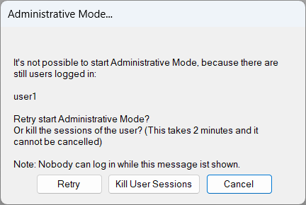
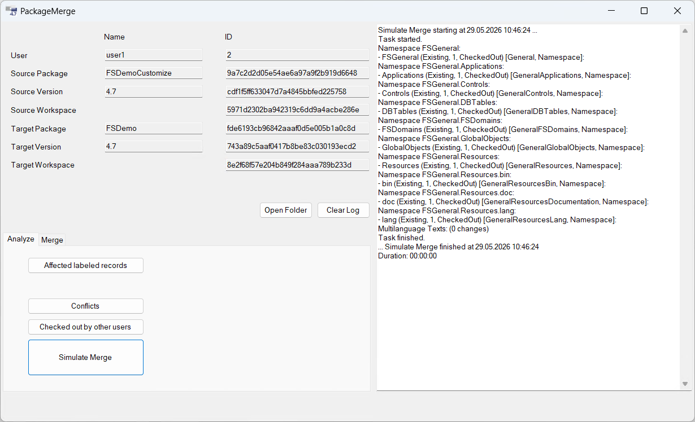
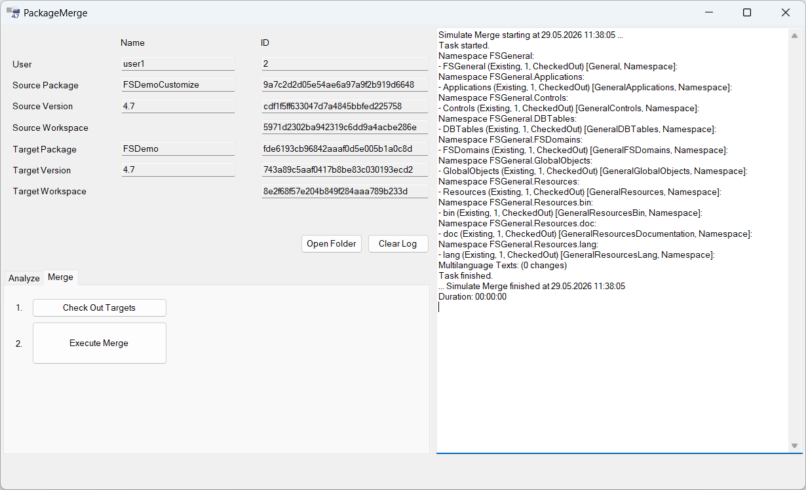

Package Merge
Mit dem Package Merge kann ein Package in sein direktes Basis-Package integriert werden.
Voraussetzungen
Zugriff auf Datenbank
Es muss sichergestellt werden, dass der Datenbankbenutzer, mit dem sich Framework Studio am Repository anmeldet, ausreichend Rechte hat. Neben den grundlegenden Rechten zum Lesen, Schreiben, Aktualisieren und Löschen von Datensätzen, die Framework Studio immer benötigt, gehören insbesondere auch „Alter table“-Rechte z.B. zum Aktivieren und Deaktivieren von Datenbanktriggern und -Constraints dazu.
Konfiguration der Datenbank (nur MS SQL Server)
Wenn das verwendete Repository auf MS SQL Server läuft, kann mit folgenden Statements ermittelt werden, ob die Zeilenversionierung korrekt konfiguriert ist.
select snapshot_isolation_state_desc as [READ_COMMITTED_SNAPSHOT],
is_read_committed_snapshot_on as [ALLOW_SNAPSHOT_ISOLATION]
from sys.databases where name = '{repository_name}'
GO
Wenn das Statement die Ausgabe ON | 1 liefert, ist alles in Ordnung.
Ansonsten müssen folgende Statements vor der ersten Verwendung des Package Merges bei exklusivem Zugriff auf die Datenbank ausgeführt werden:
ALTER DATABASE {repository_name} SET READ_COMMITTED_SNAPSHOT ON
GO
ALTER DATABASE {repository_name} SET ALLOW_SNAPSHOT_ISOLATION ON
GO
Packageversionen
Wenn eine Quellpackageversion in eine Zielpackageversion integriert werden soll, müssen folgende Rahmenbedingungen erfüllt werden:
Die Zielpackageversion ist die direkte Basispackageversion der Quellpackageversion. Es kann also nur in das direkte Basispackage überführt werden.
Sie müssen Eigentümer von Quell- und Zielpackage (im gleichen Repository) sein.
Es darf keine Elemente in der Quellpackageversion geben, die nicht in die Zielpackageversion überführt werden sollen. Es kann also immer nur eine vollständige Packageversion in eine andere integriert werden!
Das Quellpackage darf anschließend nicht mehr verwendet werden! Genauer: Es darf niemals irgendeine Version des Quellpackages zusammen mit einer Version des Zielpackages in einer Hierarchie verwendet werden, in der die Quellpackageversion bereits integriert ist.
Quell- und Zielpackageversion müssen aufeinander aufbauend einen aktuellen, vom FrameworkCompiler erzeugten und erfolgreich kompilierten Workspace besitzen. Aktuell bedeutet in diesem Fall insbesondere, dass nach dem Erzeugen des Workspaces keine Checkins mehr erfolgt sind.
Im Zielpackage muss ein Benutzer mit Bearbeitungsrechten (also nicht der FrameworkCompiler, idealer Weise ein FC-User) den aktuellen Workspace besitzen. Dieser darf keine Elemente ausgecheckt haben, welche evtl. den Merge-Vorgang betreffen.
Die Zielpackageversion darf nicht versiegelt oder im Service Release Mode sein.
Während des Zusammenführens darf kein Benutzer (außer dem Durchführenden) am Repository angemeldet sein.
Es darf keine Forms in der Quellpackageversion geben, die noch nicht vom DeprecatedLayout in das Layoutsystem ab Framework Studio 4.0 überführt wurden.
Note
Dies sollte bereits mit dem Update FS 4.6 erledigt sein!
Sollen Versionen unterschiedlicher Quellpackages in eine Zielpackageversion integriert werden, so muss nach jeder Integration die Zielpackageversion und die als nächstes zu integrierende Quellpackageversion erneut kompiliert werden, bevor die nächste Integration durchgeführt werden kann. Auch der Benutzer muss sich nach dem Kompilieren an beiden betroffenen Packageversionen erneut anmelden.
Wenn Quellpackage und Zielpackage unterschiedliche Packagekürzel verwenden, ist damit zu rechnen, dass in der Nacharbeit zusätzliche manuelle Korrekturen erfolgen müssen.
Warning
Es ist technisch nicht möglich, die Einhaltung aller Rahmenbedingungen automatisch zu prüfen.
Daher geschieht die Verwendung des Package Merges auf eigene Verantwortung!
Allgemeine Hintergrundinformationen
Der Merge Vorgang wird mit einem Benutzer durchgeführt, der Rechte zum Ein- und Auschecken besitzt, also nicht mit dem FrameworkCompiler. Es bietet sich an, einen Benutzer zu verwenden, der im FC-Mode arbeiten kann, da nach dem Zusammenführen Kompilierfehler wahrscheinlich sind. In der Quellpackageversion startet der Benutzer den Package Merge. Mit diesem können auch vorab einige Analysen durchgeführt werden. Letztendlich wird der eigentliche Merge-Vorgang in zwei Schritten durchgeführt:
- Zunächst werden (automatisch) in der Zielpackageversion alle Elemente ausgecheckt, die bearbeitet werden müssen.
- Anschließend werden die Daten übertragen.
Nach dem Zusammenführen erfolgt die Anmeldung in der Zielpackageversion mit dem gleichen Benutzer, der das Zusammenführen ausgeführt hat. Alle geänderten und neuen Elemente sind unter diesem Benutzer ausgecheckt. Beim Kompilieren werden unterschiedliche Probleme auftreten. Die Probleme müssen manuell nachgearbeitet werden.
Wurde mit dem Benutzer erfolgreich alles kompiliert, so können alle Änderungen eingecheckt werden und der Workspace als FrameworkCompiler Workspace zur Verfügung gestellt werden. Die Quellpackageversion sollte anschließend nicht mehr verwendet werden. Idealer Weise wird diese gelöscht, um Fehlverwendungen so gut wie möglich auszuschließen.
Empfohlenes Vorgehen
1. Organisatorische Planung
Planen Sie alle Schritte frühzeitig! Insbesondere könnte es hilfreich sein, vorzeitig Vorbereitung, Anmeldung an der Quellpackageversion und Analyse durchzuführen, um frühzeitig unvorhergesehene Probleme erkennen zu können. Der Admin Mode muss für die Analysen nicht aktiviert werden.
2. Vorbereitung
Prüfen Sie, ob alle Voraussetzungen tatsächlich erfüllt sind. Falls noch nicht geschehen, melden Sie sich einmalig mit dem zum Merge zu verwendenden Benutzer an der Zielpackageversion an, um den Benutzer Workspace aufzubauen. Rufen Sie dort den Menüpunkt Source Control / Get Latest Check Ins auf. Sollten dort Elemente aufgeführt werden, wählen Sie alle Elemente aus und starten Sie die Aktualisierung mit dem Button Refresh Elements.
Stellen Sie sicher, dass keine Elemente ausgecheckt sind.
3. Sperre
Stellen Sie sicher, dass das Framework Studio Entwicklungsrepository ausschließlich von Ihnen verwendet wird. Neben organisatorischen Maßnahmen melden Sie sich dazu mit dem Package Manager am Repository an und starten dort den Admin Mode (Menüpunkt Administrative Mode / Start).
4. Datenbanksicherung
Erstellen Sie eine Sicherungskopie vom Framework Studio Entwicklungsrepository.
5. Anmeldung an der Quellpackageversion
Melden Sie sich mit der Framework Studio IDE an der Quellpackageversion mit dem gewünschten Benutzer im Maintenance Mode an (Checkbox Maintenance Mode in der Anmeldemaske setzen). Wenn der Admin Mode aktiv ist, beenden Sie diesen kurzzeitig, um die Anmeldung durchführen zu können. Versuchen Sie den Admin Mode (wie in Sperre beschrieben) direkt nach der Anmeldung wieder zu starten. Nun wird als Einziger der soeben angemeldete Benutzer angezeigt. Dies ist kein Problem: Solange Sie die Informationsmaske offen stehen lassen, kann sich kein weiterer Benutzer anmelden. Lassen Sie deshalb die Informationsmaske unbeantwortet offen stehen!

6. Analyse
Starten Sie den Package Merge über den Menüpunkt Tools / Package Merge.
Sollte der Menüpunkt nicht angeboten werden, prüfen Sie folgendes:
- wurde Framework Studio im Maintenance Mode gestartet?
- sind die vom Merge benötigten Dateien (PackageMerge.dll, PackageMerge.FSAddIn.Xml) vorhanden?
- ist in der zuletzt genannten Datei der Package Merge aktiviert?

Auf der Registerkarte Analyze werden alle Analysefunktionen angeboten. Diese führen keinerlei Änderungen im Repository durch und können daher jederzeit wiederholt werden. Der Admin Mode ist für diese Aktionen daher nicht nötig (aber auch nicht hinderlich).
Die Funktionen Affected labeled records, Conflicts und Method ID conflicts werden im Kapitel Problemkategorien beschrieben. Die Funktion Simulate Merge simuliert die Änderungen, die beim Zusammenführen durchgeführt würden. Dabei wird in der Log Anzeige detailliert aufgeführt, an welchen Elementen welche Änderungen im Detail erfolgen würden.
Important
Führen Sie alle Analysefunktionen aus!
Suchen Sie in den Log Ausgaben der Funktion Simulate Merge systematisch nach dem Text ! ! ! Error ! ! !.
Dieser Text deutet auf ein ernsthaftes, nicht vorhergesehenes Problem hin.
Sollte ein solcher Text gefunden werden, darf die Zusammenführung nicht gestartet werden, denn es ist davon auszugehen, dass diese nicht fehlerfrei durchgeführt werden kann.
Jede Aktion fügt Log Ausgaben in das dafür vorgesehene Textfeld ein. Dieses Textfeld kann mit dem Button Clear Log gelöscht werden, um die Übersichtlichkeit bei der Durchführung mehrerer Aktionen zu erhöhen. Des Weiteren wird zu jeder Aktion eine eigene Log Datei erzeugt. Den Ordner, der alle Log Dateien enthält, können Sie mit dem Button Open Folder öffnen.
7. Durchführung
Es wird ausdrücklich empfohlen, alle Analysefunktionen direkt vor der eigentlichen Zusammenführung einmal auszuführen, auch wenn dies zu einem früheren Zeitpunkt bereits geschehen ist. Auf diese Weise werden alle Änderungen, die durchgeführt werden sollen, in einer Log Datei gesichert und können auch im Nachhinein noch betrachtet werden.

Auf der Registerkarte Merge muss als erstes die Funktion Check Out Targets ausgeführt werden.
Suchen Sie in den Log Ausgaben dieser Funktion systematisch nach dem Text ! ! ! Error ! ! !.
Dieser Text deutet darauf hin, dass ein Element nicht ausgecheckt werden konnte.
Sorgen Sie in diesem Fall dafür, dass das Auschecken möglich wird und wiederholen Sie den Vorgang.
Erst wenn alle Elemente ausgecheckt werden konnten, darf die Funktion Execute Merge gestartet werden.
Dadurch wird das eigentliche Zusammenführen gestartet.
Caution
Brechen Sie diese Aktion nicht ab!
Sollte die Aktion nicht fehlerfrei durch laufen oder doch abgebrochen werden, so muss die Sicherung des Repositorys (Datenbanksicherung) zurück gespielt werden.
Suchen Sie in den Log Ausgaben dieser Funktion systematisch nach dem Text ! ! ! Error ! ! !.
Dieser Text deutet darauf hin, dass ein ernst zunehmendes Problem aufgetreten ist.
Auch in dieser Situation muss die Sicherung des Repositorys zurück gespielt werden.
Important
Der Merge-Vorgang sollte nur ein Mal ausgeführt werden!
8. Admin Mode beenden
Nach dem erfolgreichen Zusammenführen kann der Admin Mode im Package Manager beendet werden.
9. Nacharbeit
Melden Sie sich mit dem verwendeten Benutzer an der Zielpackageversion an. Dort sind alle geänderten Elemente ausgecheckt. Die gesamte Packageversion muss nun mit dem Benutzer kompiliert werden. Es wird empfohlen, dazu den Compile Manager zu verwenden.
Erst wenn alles erfolgreich kompiliert wurde, können alle Elemente (über die Suche nach „Checked Out Records“ in einem Schritt) eingecheckt und der Stand durch „Complete Framework Compiler“ als FrameworkCompiler Stand veröffentlicht werden.
Insbesondere ist mit folgenden Problemen zu rechnen:
Überschriebene Methoden
Diese werden mit gleichem Namen hinzugefügt, so dass sie doppelt existieren und zu Kompilierfehlern führen. Im Zielpackage sollte immer die ursprüngliche Methode erhalten bleiben, da sonst ggf. WorkflowLinks auf diese Methode (auch in Custom Packages) zerstört werden.
Überschriebene Individual Properties mit base Aufruf
Wenn ein Individual Property in der Quellpackageversion überschrieben wurde und die Überschreibung einen base Aufruf enthält, so wird bei der Zusammenführung folgender Error Code erzeugt: #error Consolidation rework neccessary.
Es folgt der Code von Ziel und Quelle. Dieser muss manuell wie gewünscht zusammengefügt werden und die #error-Codezeile entfernt werden.
Methoden der Problemkategorie “Method ID conflicts”
Nur wenn bei der Analyse Probleme in diesem Bereich aufgeführt wurden, müssen diese nun manuell nachgearbeitet werden. Siehe Method ID conflicts.
Sonstiges
Im manuell geschriebenen Form Code könnte es Aufrufe an Controls geben, die das Packagekürzel enthalten (z.B. Aufruf der SetVisible Action an Gridspalten). Sollte im Quellpackage ein anderes Packagekürzel als im Zielpackage definiert sein, so haben die Controls nun im Zielpackage einen anderen Namen (mit Packagekürzel aus dem Zielpackage).
Evtl. wurden Skripte in Ressourcen gepflegt, welche zusammen geführt werden sollen. Weiterer Korrekturbedarf kann nicht ausgeschlossen werden.
10. Abschluss
Nach dem Zusammenführen muss organisatorisch sichergestellt werden, dass die Quellpackageversion niemals zusammen mit der Zielpackageversion in einer Hierarchie verwendet wird.
Ausführliche Tests sind unumgänglich, um die ordnungsgemäße Funktion sicherzustellen.
Problemkategorien
Affected labeled records
Elemente (Forms, Components, …), die customized wurden.
Diese Funktion dient lediglich der Übersicht, an welchen bestehenden Elementen Änderungen durchgeführt wurden.
Conflicts
Unterelemente (z.B. Properties, WorkflowLinks, …), die im Ziel bereits existiert haben und an denen Änderungen vorgenommen wurden, welche nicht übernommen werden konnten. Typischerweise ist diese Liste leer. Das heißt, dass normalerweise davon auszugehen ist, dass alles übernommen werden kann. Sollten doch einmal Elemente in diese Kategorie fallen, so müssen diese manuell nachgearbeitet werden.
Method ID conflicts
Historisch gewachsen ist es möglich, dass in unterschiedlichen Packages Methoden mit der gleichen ID existieren. Dies ist äußerst selten der Fall. Wird ein solcher Konflikt angezeigt, so sollte der Methodencode aus Quell- und Zielpackageversion gesichert werden.
In jedem Fall muss die Methode bei der Nacharbeitung manuell mit dem gewünschten Inhalt gefüllt werden.